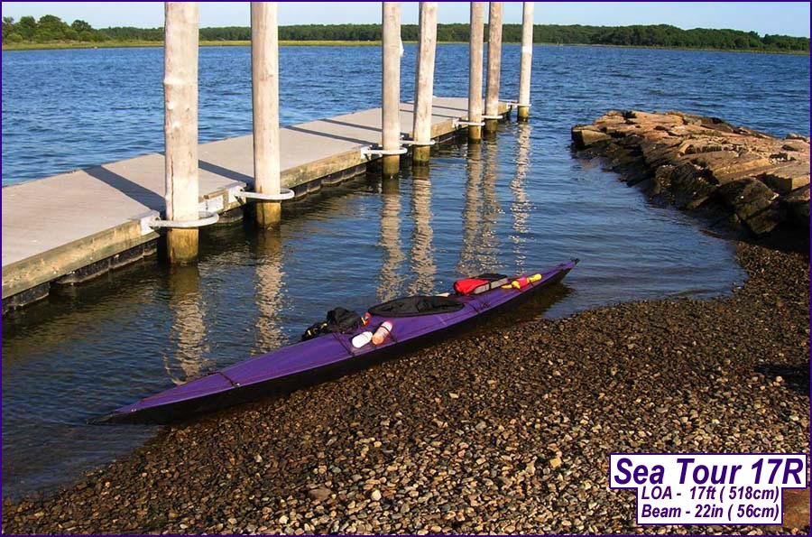

| Sea Tour 13 / 15 / 17 | Menu Previous Page Next Page |
|
 The Sea Tour 13 / 15 / 17 are stable touring kayaks with greater displacement and gear storage capability than the Greenland designs in this manual. Compared to the Greenland boats, they are wider and taller, and have a peaked aft deck. The coaming is a 2 piece, and it follows the sloping contour of the aft deck unlike the flat Greenland style coamings / deck. The two piece coaming fits in a travel case with the kayak, and the peaked deck makes it possible to skin the deck with one section of PVC. The Sea Tour 15-R / 17-R are flat aft deck versions designed for rolling / light touring. The flat aft deck is 2 in. ( 5cm) above the gunwale low point for greater gear storage. This is a change from the flat aft deck Greenland kayaks which have the deck at the same height as the gunwales. Two additional .5in ( 1.25cm) aft deck tubes are required. A flat one-piece coaming is used on this version.
|
|